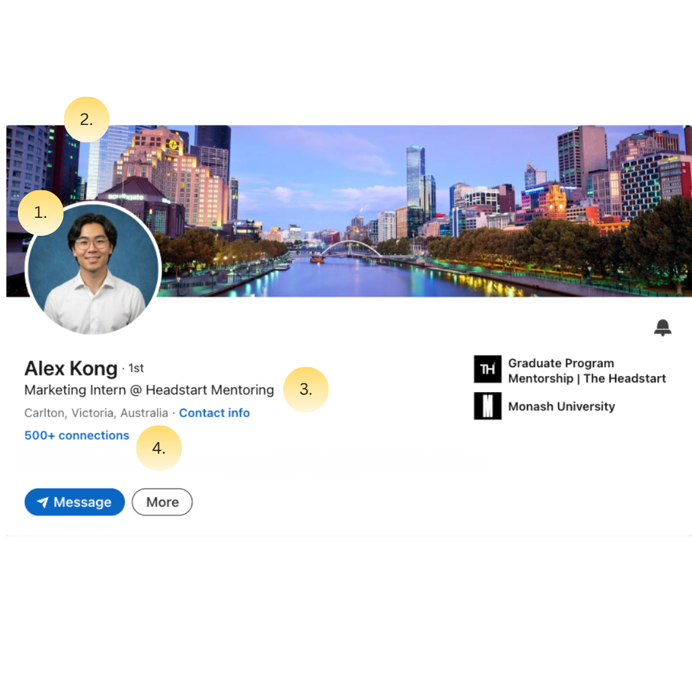
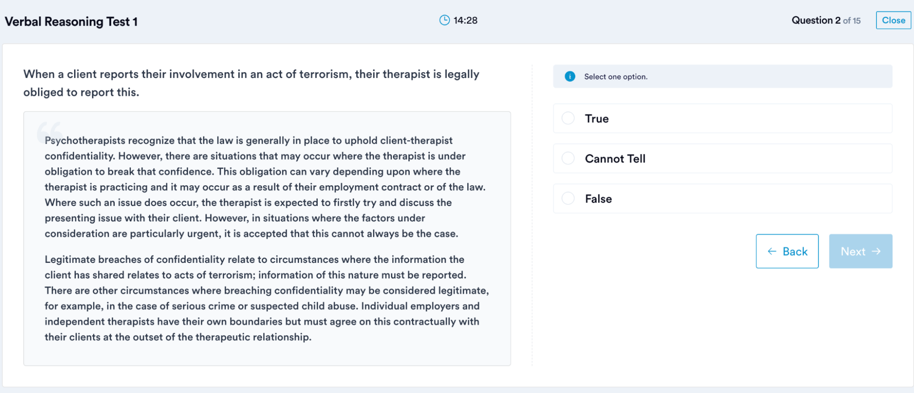
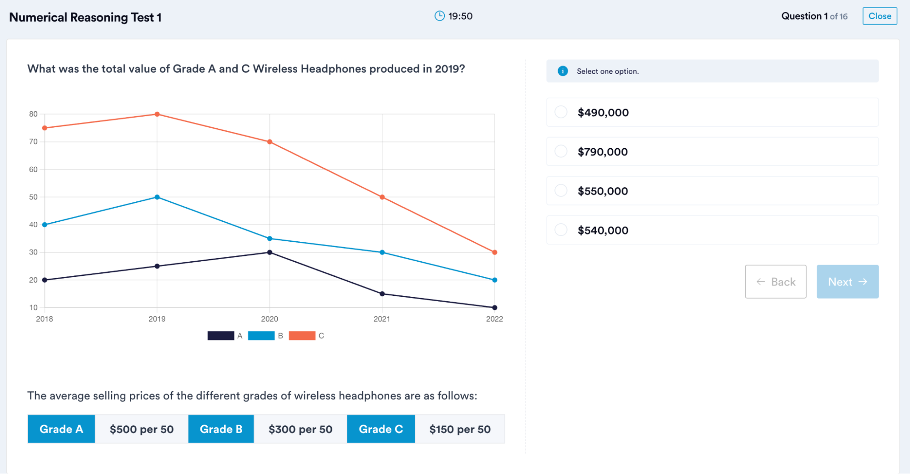
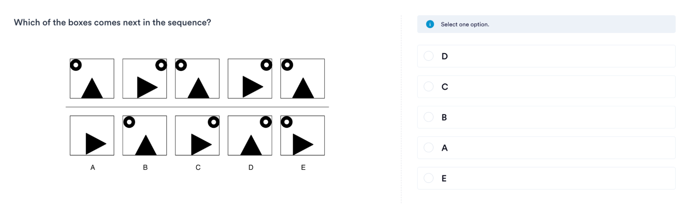

How to use this hub: these are top-ups for when you're not sure how to give tips on a particular part of the job search. Treat them as references, not a script. Pull the section you need and adapt it to your mentee's situation.
1.Stand Out & Break In
Use this template to track each mentee's progress. The left column is what makes them stand out as a candidate (aim for at least 3 of 5). The right column is the 5-stage journey to landing an offer. Revisit it each session to mark where the mentee is up to.
This is the same tracker as the Google Doc on the portal. The version below is the static reference. To actually track a mentee, copy the editable Google Doc and fill it in together.
Open the editable tracker Google Doc →
Stand Out ⭐ Break In ✅
| Minimum 3/5 ⭐ | ✅ |
|---|---|
| Work or internship experience Paid, unpaid, part-time, side hustle. Anything real in your field. |
Stage 1: Knowing where to apply
Criteria to Pass:
|
| Society or club exec role Not just a member. A named role with responsibility. |
Stage 2: Strong application materials
Criteria to Pass:
|
| Unique stories Unusual hobby, award, competition. Things that stick. |
Stage 3: Building a network
Criteria to Pass:
|
| Academic results / Certification Strong grades, relevant coursework, or a distinction. |
Stage 4: Initial interviews
Criteria to Pass:
|
| Passion project / Side hustle Things that showcase your passion, relevant to the field. |
Stage 5: Final boss
Criteria to WIN:
|
2.How to Start
How to start a job search. Purpose: introduce the mentee to the different roles within the industry they want to join.
1. About their major
- What do you like about your major? What don't you like?
- Is there something beyond your major you're open to?
2. About the industry and roles
- What are the available roles in their chosen industry?
3. About prior experience
- Do you have prior internship experience? Do you want to continue down the same route?
These few prompting questions are enough to understand whether they're settled on the route or still exploring.
3.Where to Find Roles
Reactive: where to apply online
- Seek
- Indeed
- Prosple
- Seekgrad
- University job portal
- Headstart website
Proactive approach
Gather a customised list of 60 target Australian companies (30 agencies/firms + 30 in-house) using the 4-prompt sequence below. Run each prompt in order in the same Claude chat.
Use Claude only (claude.ai with web search enabled). Other AI tools (ChatGPT, Gemini, Perplexity) don't produce reliable results for this task at the required depth of verification. If a mentee is already using another tool, ask them to switch to Claude and start fresh from Prompt 1.
After gathering the list, move to the Networking Playbook to learn how to connect with industry professionals to build a network and future referrals.
AI prompt 1: Context Understanding
AI prompt 2: Education + Brand Discovery
AI prompt 3: Agencies / Firms List (30 companies)
AI prompt 4: In-house Companies List (30 companies)
4.Resume
The annotated resume below is the teaching tool. Each highlighted section links to a comment with the advice attached.
5.LinkedIn
The key to a LinkedIn profile is to show recruiters in the mentee's desired industry that they are a good candidate.
The mentee has to:
- Be clear about their desired industry (make up their mind).
- Show why they stand out vs other candidates.
Recommendations to help fulfil the above 2 objectives:

1. Cover photo
- Clear professional picture of yourself (not an angled selfie).
- No casual clothes.
- No clubbing outfit.
- If you have no photo, take a clear horizontal angled selfie with a clear background.
2. Background picture
- Can be a background picture of the city you are in.
- Can be a designed poster on Canva that includes your name, uni, and a backdrop of your city.
3. Headline
Clear role in society, internship, or major plus your uni.
Example, ranked from best choice to least best choice:
- Marketing Intern @ Headstart Mentoring
- Marketing Executive @ Wasabi Society
- Marketing Student @ Monash
4. Connections
At least 100 connections to show credibility.
5. About page
The structure of the content should include:
- Intro about yourself (country, your subject).
- Interested industry you are getting into, and why.
- Fun fact or interesting fact about yourself relevant to your desired industry.
- Short description of your proudest achievement relevant to the industry you want to get into.
Each section should be separated by 1 blank line and should be no more than 2 lines.
6. Experience
- Put direct and relevant experience into the Experience section.
- Include society experience if directly relevant to the role.
- If no internship experience and only minimal society experience, a part-time retail job can be included.
- If there are at least 2 relevant experiences, the part-time retail role can be deleted.
- Put the most impressive 1 to 2 points into the description (if they have quantifiable impact).
- For any society experience that is less relevant, put it under Voluntary.
7. Education
- List the university. If there are impressive high school grades that can be translated to ATAR, include them too.
- List all competitions and societies the mentee is a part of (being a member doesn't count).
- Put uni grades only if they are Distinction or higher.
8. Honors and Awards
List all relevant awards.
9. Testimonials
Ask for testimonials from previous managers if necessary, or teammates in case competitions.
10. Additional ideas (nice to have)
- Creative portfolio as a link.
- Posts related to the industry the mentee wants to get into.
- A website version of the resume.
6.Cover Letter
The truth about cover letters is that at least 60% of the time they won't be read by a recruiter. But in the chance that they do read it, how can we impress them and stand out?
Insert the following prompt into an AI model of your choice.
The mentee inserts:
- Their resume
- 1 unique fact about themselves
- The job description
7.Networking Playbook
Who to connect with proactively (continuation after mentees have gathered a list of companies they are interested in).
Connection and DMing is always going to be a numbers game. Depending on your credentials, you may get a 15% to 60% connection rate, and then another 10% to 30% response rate even if you do everything right.
3 types of people, listed according to priority
1. People directly in the team or adjacent teams you are going for
How to find them: look at the role advertised, the listing should have information on the team you are going to join. Find those people and connect.
For example, the marketing department of BMW: all people in the department, if you are a marketer.
2. Directors and CEOs of the firm who have influence
Connect to all director-level employees and ask them for a chat.
3. Recruiters and Talent Acquisition
Directly responsible for the initial rounds of hiring. They are often too busy, so it is recommended to reach out before a job post is out.
Message templates
Important: never copy and paste. Always change some wordings.
To people in your future team or department
Goal: offer them an incentive to take a break and have a coffee.
To directors or CEOs
Goal: make them feel respected and looked up to, so they feel good and are down for a chat.
To talent acquisition
Only when the company has a grad program or when there is a specific role hiring. Goal: acknowledge how busy they are when processing many applications, send a meeting link to make it easy for them.
8.Coffee Chat
Purpose of the coffee chat
- Build a connection, so you can ask for favours, i.e. referrals.
- Understand the role and industry landscape better.
- Gain advice on how to approach job searching.
- Coffee.
To truly build a connection, you have to
- Make them feel good about sharing advice with you.
- Make them feel respected and accomplished, because they sense that you look up to them.
- Showcase your passion for the field they are in.
How to achieve that
Prepare 5 to 6 questions to ask:
- 2 to 3 questions about their specific journey, so they can talk about themselves and you understand how they got to where they are.
- 2 to 3 questions about the role they are currently doing and their company.
- 1 to 2 questions on advice for job searching.
The questions you ask must be curated after research on the company or role. Don't ask simple questions about basic job tasks, they will tell you themselves.
Extra tips
- Always wear at least semi-formal.
- Always thank them if they are buying you a coffee.
- Bring a notebook to jot notes.
- Prepare your resume to send if they are interested in helping you.
- Feel free to ask them what they do outside of work.
- Be yourself and just enjoy the coffee.
What to do after the chat
- Send a follow-up message to thank them for their time and tell them one thing you found the most useful. Keep it short and simple.
- Don't ask for another coffee chat.
9.Interview Resource
9.1 Interview Foundations
What interviews actually test
Interviews are not about knowledge. They test the following, ordered by importance:
- Competence and Confidence: are you good at what you do? Can you show that in an interview confidently?
- Energy and likeability: would they enjoy working with you? Would they remember you after interviewing 20 candidates?
- Self-awareness and Transparency: do you know your strengths and weaknesses? Can you show interviewers that you are speaking the truth?
The 6 types of interview questions
| Category | Description | Example questions | Key |
|---|---|---|---|
| Intro | Who you are, what you're about | "Tell me about yourself" | Provide 1 unique story about how you relate to the role or company |
| Motivation | Why you want us | "Why this company?" | Be clear on what drives and motivates you |
| Behavioural | Past actions predict future actions | "Tell me about a time..." | Use the answer structure in 9.2 plus further extension per question |
| Strengths and Weaknesses | Fit and maturity | "What's your biggest weakness?" | Must describe how you have been working on weaknesses |
| Technical, Role-based, Past experience | Foundations for the job | "Walk me through your analysis..." | Don't go too specific. They don't care about your numbers unless they are hyper relevant |
| Fit and Questions | Culture alignment | "What questions do you have for us?" | Treat it like a conversation, be interested in the interviewers and ask about their journey |
Interview golden rules
- Be impressive, not arrogant.
- Professional but personable.
- Evidence beats adjectives ("I improved X by Y%" beats "I'm hardworking").
- 1 to 2 minutes per answer.
- Show ownership, reflection, and impact (numbers).
- If you have a choice or better options, don't use uni projects as your examples.
- Build your persona and interview answers around a general theme that shows you are: able to integrate and fit in the team, willing to learn, communicative, and able to do the job, while showcasing your own strengths.
9.2 Answer Structures
Tell me about yourself: the "DU" strategy
Due diligence introduction (max 30 seconds): everyone literally has the same information.
- Background (degree, year)
- Relevant experience(s) (your role, key responsibilities, transferable skills)
One unique fact about yourself, relevant to the company (max 45 seconds): the key to stand out from the bunch.
- How to find the unique fact? Extract it by talking to them and understanding them (Fidel will further explain in the onboarding call).
- Exercise the tutor can do with the student.
End the intro (max 10 seconds):
- "Excited to be here."
Behavioural answer structure
- Background: clear situation and your task (high level). Common mistake: people over-explain the background, interviewers don't care that much.
- Action: clear steps on how you achieved it.
- Result: quantifiable or specific.
- Learning: personal insight.
9.3 Question Bank
How to read this section: every question is rated by how often it appears in real interviews. Focus on A first, then work through B, then C. The "keys to answering well" are suggestions, not a checklist. Pick the ones that fit your real story.
- If you have even thought about your own ambition and whether you can articulate it well.
- Talk about how you have plans to reach them one day.
- Talk professionally, then a bit about personal goals to showcase your personality.
- If the content of the role is interesting to you, and why.
- Describe details on how your past experience doing something similar gives you fulfilment or satisfaction.
- Pinpoint what part of the role gives you satisfaction.
- See if you have done the research on the company.
- Link company values to your own values.
- Describe recent company achievements sourced from their website.
- Describe the culture of the company after networking with someone inside it. Caveat: you have to reach out to someone in the company first.
- Understand your motivations, see if they align with the team to determine fit.
- Be authentic, give examples.
- See if your own values can be linked to the company values.
- What brings you joy, whether you are an interesting person in general.
- Opportunity to flex about a hobby or skill that you are good at.
- Provide a brief backstory of when and why you started.
- Explain why doing this thing gives you joy and satisfaction.
- How well you can work with teams.
- Don't mistake this for being a leader. Everyone says how they led uni project groups to do something and talks about task assignment based on strengths.
- Find a unique role that you actually play inside a team: organiser of meetings, note taker and meeting summariser, vibes person, includer who treasures everyone's opinion.
- Describe how you made the group better and what result it drove.
- What you would do when working with people who are difficult. A realistic situation in a workplace.
- Before you judge the uncooperative person, try to see things from their perspective and check if they are currently facing any challenges.
- Key is communication, whether directly to the person or through your manager or colleague.
- Ability to translate complex concepts to other teams.
- Have a specific method that you use to translate concepts (e.g. use examples in daily terms, ask AI to help make a no-jargon version of your email).
- If you have the ability to work well with teams, any leadership skills, and whether you know how to empathise with people.
- Must be an interesting story if possible. Don't use a uni project.
- Key learning can be how to see things from other people's perspectives.
- Focus most time on describing the exact actions you took that solved the conflict. Don't over-explain the story.
- What kind of leader are you?
- Find key traits of being a leader and use them to brainstorm the story, e.g.:
- Communicative: setting communication and workload expectations to everyone in the team.
- Inclusive: treasure other people's opinions and listen to different viewpoints.
- Flexible: being able to cater your communications to different team members.
- See if you have the ability to be a leader.
- Highlight the methods and means you took clearly. For example, you used data to persuade a friend to go out with you, or you understood their pain point and solved a problem for them first.
- Don't just say "I managed to persuade them". That is not answering the question.
- How you deal with changes.
- Portray the difficult situation well (a rare instance where the background context can be longer than usual).
- Break down the exact steps you took to deal with that challenging situation very clearly.
- Key lessons you have learnt and how you deal with failure.
- The mistake must be real.
- You must have a change of action since making that mistake, which you will mention.
- Your ability to prioritise and how well you communicate with stakeholders to manage their expectations.
- You can say you like to plan ahead and forecast to make sure the tight deadline is manageable.
- You can say you aren't scared to sacrifice rest time to do everything well.
- You can say you are communicative with stakeholders to change the schedule of something to handle the tight deadline.
- Whatever your approach is in real life.
- How you are resourceful despite limited resources, and how you deal with challenges that arise.
- Explain what measures you took and how you ensure your work is still up to quality and doesn't cause any disappointment.
- You can talk about being open and communicative with the people checking your work to manage their expectations.
- Your current approach to data analysis.
- Explain the tool well, and give 1 specific example of how you used it, with a clear step-by-step of handling the data.
- Whether you are using AI efficiently and are not overly dependent.
- Show that you have a specific way of using AI, and how you get the most results using that specific way or in a specific area of work.
- Make it interesting and create an edge for yourself.
- How strong your organisational skills are, how you work as an individual, whether your working style fits the team.
- Showcase your own practices on how you manage your uni day.
- Show that you are flexible most of the time to work around meetings.
- How you can bring initiative to improve the team as a young person.
- How you identified a process that needs changing and how you actually made the change.
- Must include results.
- How you can improve and how well you take feedback.
- One specific example.
- Depending on your real way of receiving feedback, you can mention specific techniques or tricks you use, e.g. jotting them all down in a book.
- If you are able to learn things quickly on the job.
- Talk about the reason you wanted to learn this skill.
- Mention the exact methods you used to achieve it.
- If you are passionate in general and always love to do more than the bare minimum.
- Explain why you went above and beyond, and what your motives are.
- Finding a similar experience would be crucial here, since they'd be able to see your exact motivations to go above and beyond the job.
- See if you can further explain what you listed on your resume.
- Clearly list 2 to 3 things you have learnt. They can be any skill.
- They must be realistic, as interviewers would know if you are faking it.
- Understand what you are good at, see if the team needs this strength.
- Explain how this strength of yours allowed you to achieve something you are proud of, something that people are objectively impressed by.
- See if you are self-aware of your own flaws.
- Mention how you identify the flaws.
- How you have made the effort to improve them.
- Direct experience, to understand if you can do the job.
- Mention exact types of work.
- Prepare 1 example.
- Talk about impact or results from your work.
Sales / Client-facing roles
- How you would react and act when the client is difficult.
- Mention the exact poor behaviour.
- Showcase how you show empathy.
- How you dealt with it.
Finance roles
[To fill]
Accounting roles
[To fill]
Software Engineering roles
[To fill]
9.4 What questions to ask after an interview?
The purpose of asking questions is to:
- Show you have the passion and motivation to improve and fit in quickly.
- Let interviewers have a chance to talk about themselves.
- Understand if it is a company you want to work for.
Example questions:
- What are the few key things you want me to achieve in the first 3 months of the role?
- What makes a grad stand out? What practical things do they do that impress you?
- What is one thing that makes you like the company?
- How would the company help with my development to grow and progress?
- What managerial style do you have?
10.Recorded Interviews
Usually 3 to 5 questions. Some have time limits, some don't.
Settings before starting a recorded interview
- Good wifi connection.
- Absolutely no one coming into your room or any sort of interruption.
- Good lighting.
- Eye contact with the screen.
- Formal upper wear.
- Camera must show your full face.
Preparation
Ideally the interview question guide would be filled out ahead of the interview practising stage. If not, the questions to prepare must include:
- Tell me about yourself.
- Why this company? See the Question Bank for how to answer this question.
- Why this role, or what's your preferred rotation for the grad program?
- Top 3 things you value most in a job.
- Your strengths and weaknesses.
- Working as a team.
- Improving a process.
For full guidance on any of these, jump to the Question Bank.
Expectation setting
You are always going to have moments of "unsmoothness". Don't restart every time you use a filler word.
Keys to do well
- Don't speak about the background context too much. Make it sharper and shorter, since interviewers have minimal attention span to a screen.
- You don't need to go to the time limit. If you finish earlier there are no issues with that.
- Don't read off a script.
11.Psychometric Test
What a psychometric test is
A standardised assessment used by employers during grad and internship recruitment to objectively measure skills and traits linked to workplace performance. Often paired with the application or resume to filter candidates. Some employers set minimum cut-off scores to progress.
The main types
Cognitive / Aptitude (right vs wrong answers)
- Verbal reasoning: read a passage, draw conclusions. Answers must be based only on the information given.

- Numerical reasoning: interpret tables, graphs, percentages, ratios. Watch scales, units, labels.

- Abstract reasoning: spot patterns and relationships between shapes, symbols, pictures.

Behavioural (no right or wrong answers)
- Personality tests: measure workplace style and traits. Tests are built to catch candidates who try to "game" socially desirable answers, so answer honestly.

How they're delivered
- Usually online via a link from the recruiter, done at home.
- Sometimes at an assessment centre or interview.
- Multiple choice, true or false, or gamified.
Preparation tips
- Read instructions carefully (calculator allowed? negative marking? time limit?).
- Verbal: only use info from the passage, don't add outside knowledge.
- Numerical: check scales, units, labels before calculating.
- Skip hard questions and come back, don't burn time.
- Personality: be honest, consistency checks will catch faking.
- Give yourself a quiet space.
- Always prep a pen and paper.
Free or useful practice resources
Paid but have a free trial (enough to get a taste).
- psychometrictests.org
- practicereasoningtests.com
- practiceaptitudetests.com
- Check your uni resources.
12.Screening Calls
There are 2 types of screening calls:
- Called by recruiters or HR inside a company.
- Called by a recruiting agency (the middleman).
They are always calling at a random time, so it is always recommended to suggest they call back at their next convenient time, so you can research the company better.
Tip: when asking for a rescheduling time, always confirm a time so they can make notes and won't forget about you.
Recruiters or HR inside a company
- They don't know the exact details of the role. Most of the time they are just jotting notes for the hiring manager (your real manager if you are hired) to see.
- They themselves don't care about the role content too much. They usually ask 2 to 3 questions, like:
- A self-introduction.
- Why do you want to work for the company?
- What about the role interests you?
- They seldom ask behavioural questions.
- They will ask logistical questions.
- When asked about visa status, say you have unlimited work rights (if you are graduating soon). Don't mention the 2 year deadline yet until they ask for more information.
Tips on how to do well
- Showcase the research you have done on the company when asked about why this company or role.
- Talk like a real person, ask questions at the end about the company.
- If there's a chance, engage in small talk to ask about their day and extend it into a normal conversation. Recruiters call countless people a day and a lot of candidates just want to sell themselves and are not interested in actually talking. This is a golden opportunity to be different.
Recruiting agency
- They are more familiar with the roles they are hiring for since they usually work for similar clients in similar industries.
- Companies hire them to locate talent efficiently, and trust them to make the decision to bring forward 3 to 5 candidates for the role.
They will usually tell you about the role, give you a detailed job description, and ask if you are interested. The key is to showcase relevant experience that aligns with the job and to be a real person. Same as recruiters, they call people for a living, and they have more incentive to move things quickly because they receive commission based on the hire.
Chat to them like a real person or friend, so you give them a reason to like you and move you forward.
13.Assessment Centres
What is an assessment centre?
Mainly for grad programs or grad roles. You have 2 main assessment sessions plus break time to wait for your turn for individual interviews.
Group case study
Format: 3 to 6 people in a group, around 30 minutes of discussion time, 10 minutes of presentation time.
What kinds of case study? Mostly broad topics within the industry or role you are applying for. In terms of difficulty and knowledge, they are not going to be like a uni exam.
What interviewers are observing
- Whether you are collaborating well with teammates.
- Whether you can lead the team forward while displaying qualities.
- Whether you have the knowledge or thinking to answer questions well.
Practical quick wins against other candidates
- Bring a stack of paper and highlighters for everyone.
- Offer to time-keep, and suggest presentation role allocation before time runs out.
- Offer to write down notes for the team during discussion.
Keys to stand out during the discussion period
- Based on the notes you jot down, offer a summary after every question to ensure everyone is aligned.
- When you disagree with someone's idea, make sure to find ways to be respectful, e.g. compliment their thinking first.
- Practise case studies with easy business frameworks so you always have ideas to propose.
- Try to give the quiet students a chance to speak.
- Never cut someone off when they are speaking.
- Think from business frameworks to guide the conversations (see below).
Keys to stand out during the presentation
- Engage with the audience. For example, start with a question to grab the attention of the interviewers so they have a chance to think.
- When handing off the speech to the next teammate, mention their name. This shows you care about the other teammates too.
Face-to-face interview
Refer to the Interview Resource section.
Break time and downtime
Don't overlook this.
- Talk to the interviewers or the people who were in the room viewing the case study presentation.
- Find interviewers who are crowded by fewer people, ask them 1 to 2 questions about their roles and how they find the company.
- Extend the talk to asking more about their lives and hobbies. Have a genuine chat if possible, and see if anything about you is relatable to them.
Example case studies
Practice cases you can run with a mentee, each with a fictional company brief and prompts:
- Cup Above Coffee — FMCG, retail expansion
- FlexFit Studios — services, subscription model
- GreenGo Grocer — grocery, sustainability and pricing
- Summit Edge Outdoors — retail, market entry
Business case frameworks
These are helpful for idea generating, but often other group members may not listen and use a certain framework.
- PESTLE (Political, Economic, Social, Technological, Legal, Environmental): for any external environment analysis.
- 4Cs (Customer, Competition, Company, Context): for any internal analysis.
Don't over-study them. They are just good to haves and something to help you think through business questions.
14.Individual Case Study
For some junior roles, you would need to carry out an individual task as part of the recruitment process. The content of the test is role-dependent, so we cannot help with the deep technicality of the content. Here are some tips on what to do in different scenarios:
- If you don't know something or are struggling to answer, be honest about it. Tell them what methods you have tried but you don't know. Ask for direct guidance on the spot if the interviewers have time. This showcases that you are willing to learn and admit you don't know, rather than pretending you do and giving an answer that is completely wrong.
- Rather than just presenting your answers, you can also share the method you used to arrive at the answer, to showcase that you actually know how to do it and to showcase your thinking. Don't just read out the answer and move on to the next question.